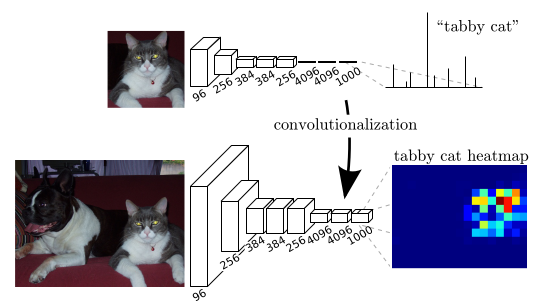
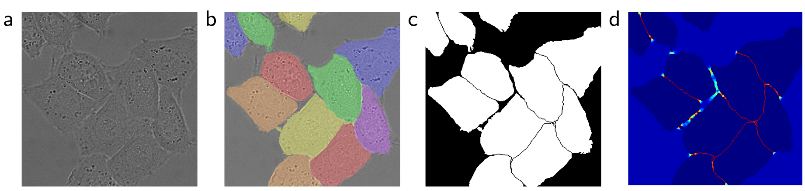

<h1> Neural Networks <br/> and <br/> Machine Learning </h1> ### Week 5: Modern ConvNets and Segmentation ### Instructor: Prof. Emre Neftci <center>https://canvas.eee.uci.edu/courses/21750</center> <center>http://tinyurl.com/nmi-lab-appointments</center> [](?print-pdf)
<h1> Deep Learning Goody Bag II</h1> <h2> Normalization, FashionMNIST, Resizing data </h2>
<h2>Normalization</h2> <ul> <li /> If preactivations drift during training, it is costly for subsequent layers to adapt to that drift. <li /> Several normalization techniques exist, we will focus on the one use the most commonly (Batch Norm). </ul>
<h2>Batch Normalization</h2> <ul> <li /> Batch Normalization (BN) is one solution to this problem. BN transforms the activations at a given layer x according to: $$ \mathrm{BN}(\mathbf{x}) = \mathbf{\gamma} \odot \frac{\mathbf{x} - \hat{\mathbf{\mu}}}{\hat\sigma} + \mathbf{\beta}</div> $$ where $\hat{\mathbf{\mu}}$ is the mean over the batch, $\hat\sigma$ is the standard deviation over the batch. $\gamma$ and $\beta$ are trainable scaling and offsets parameters. <li /> Typically a noise term is added to the calculation of $\hat\sigma$. This noise term prevents a division by zero and also acts as a regularizer <li /> BN speeds up the training in large networks <li /> BN is applied right before the application of the activation function </ul>
<h2>Goody II.1 Use BN in Feed Forward Neural Networks</h2> <pre><code class="Python" data-trim data-noescape> def __init__(self): super(Net, self).__init__() self.layer1 = torch.nn.Linear(128,64) self.layer1_bn =nn.BatchNorm1d(64) ... def forward(self, x): y = self.layer1(x) y = self.layer1_bn(y) y = torch.relu(y) ... </code></pre>
<h2>Goody II.1 Use BN in Convolutional Neural Networks</h2> <pre><code class="Python" data-trim data-noescape> def __init__(self): super(Net, self).__init__() self.layer1 = torch.nn.Conv2d(3,32,3,1) self.layer1_bn =nn.BatchNorm2d(32) ... def forward(self, x): y = self.layer1(x) y = self.layer1_bn(y) y = torch.relu(y) ... </code></pre>
<h2> Fashion MNIST </h2> <ul> <li/> MNIST is too easy: 99.70% classification means 30 misclassified samples <li/> But the size is great for proof of concept. The Fashion MNIST dataset is the same size (28x28, 70k images, 10 classes) and is slightly harder </ul> <img src="img/fashion-mnist-sprite.png" class=stretch />
<h2> Goody II.2 Use Fashion MNIST as drop-in replacement for MNIST </h2> <ul> <li /> Use fashion MNIST wherever you can use MNIST to test your model. </ul> <pre><code class="Python" data-trim data-noescape> train_set = datasets.FashionMNIST('./data', train=True, download=True, transform=transforms.Compose([ transforms.ToTensor(), transforms.Normalize((0.1307,), (0.3081,)) ]), target_transform = None,) train_loader = torch.utils.data.DataLoader(train_set, batch_size=100, shuffle=True) </code></pre>
<h2> Goody II.3 Data pre-processing on-the-fly </h2> <ul> <li /> Often, computer vision models are optimized for a given size. For example in torchvision: <blockquote> All pre-trained models expect input images normalized in the same way, i.e. mini-batches of 3-channel RGB images of shape (3 x H x W), where H and W are expected to be at least 224. The images have to be loaded in to a range of [0, 1] and then normalized using mean = [0.485, 0.456, 0.406] and std = [0.229, 0.224, 0.225]. </blockquote> <li /> You can use the following transforms to make any color image compliant with this constraint: <pre><code class="Python" data-trim data-noescape> preprocess = transforms.Compose([ transforms.Resize(256), transforms.CenterCrop(224), transforms.ToTensor(), transforms.Normalize(mean=[0.485, 0.456, 0.406], std=[0.229, 0.224, 0.225]) ]) </code></pre> </ul>
<h2> Goody II.3 Example CIFAR10 </h2> <ul> <li /> MNIST has only 1 channel, so you can't use it in pre-trained models (but you can modify the pre-defined models to accept a single channel) <li /> CIFAR10 is another commonly used dataset. You can make CIFAR10 compliant with pre-trained models as follows </ul> <pre><code class="Python" data-trim data-noescape> train_set = datasets.CIFAR10('./data', train=True, download=True, transform=preprocess, target_transform = None,) train_loader = torch.utils.data.DataLoader(train_set, batch_size=100, shuffle=True) </code></pre> [](https://drive.google.com/open?id=1L0Q3f9m0xIyAx18GGhij-9rwZyQq-mYH)
<h1> Modern Convolutional Neural Networks </h1>
<h2> The Rise of Deep Learning </h2> <ul> <li /> Until 2012, neural networks were often surpassed by <em>classical</em> machine learning methods, such as support vector machines. <li /> Rather than training <em>end-to-end</em>, classical machine learning used hand-crafted features (SIFT, SURF, HOG). <li /> In the 1990s, neural network accelerators were not sufficiently powerful. ConvNets were around, but couldn't scale to large problems. <li /> GPU accelerators, large-scale labeled data (ImageNet) and the perserverence of neural network researchers changed this in late 2000' </ ul>
<h2> AlexNet </h2> <div class=row> <div class=column> <ul> <li /> In 2012, Krizhevsky, Sutskever, & Hinton implemented core operations (convolution operations) of CNNs on GPUs, which achieved excellent performance in the ImageNet challenge. <li /> The capacity of the network was contolled using dropout and data augmentation. <li /> Alexnet (Right) also had subtle differences with the LeNet (Left) <li /> In 2012, training Alexnet tooks days! Today, AlexNets are superseded by more efficient networks. </ul> </div> <div class=column> </div> </div> <pre><code class="Python" data-trim data-noescape> torchvision.models.alexnet(pretrained=False) </code></pre> <p class=ref>Krizhevsky et al. 2012 "Imagenet classification with deep convolutional neural networks"</p>
<h2> Modern ConvNets: Visual Geometry Groups (VGG) </h2> <div class=row> <div class=column> <ul> <li /> VGG networks introduced the use of <em> blocks </em> that consisted of multiple layers. <li /> The original VGG block consists of multiple 3x3 convolution layers, a ReLU and a 2x2 max-pooling layer with stride of 2 <li /> The first block has 64 output channels and each subsequent block doubles the number of output channels, until that number reaches 512 <li /> The number of convolutional blocks used depended on the size of the input. The original VGG net used 5 blocks. </ul> </div> <div class=column> </div> </div> <pre><code class="Python" data-trim data-noescape> torchvision.models.vgg16(pretrained=False) </code></pre> <p class=ref>Simonyan & Zisserman, 2014 </p>
<h2> Modern ConvNets: Network in Networks </h2> <div class=row> <div class=column> <ul> <li /> Fully Connected (FC) layers are important to mix the spatial features for a final classification. <li /> However, if their size and depth is not chosen properly, they can remove spatial structure too early. <li /> Networks in Networks perform mixing of channels (as in FC) while keeping the spatial structure. This is achieved using 1x1 convolutions. <li /> A global mean pooling layer is used to produce the output </ul> [](https://drive.google.com/open?id=1ZUxCV0J-I13XV03WA-qkALeiIYoVjI-T) </div> <div class=column> <pre><code class="Python" data-trim data-noescape> ... torch.nn.Conv2d(3, 64, 5, padding=2), torch.nn.ReLU(inplace=True), torch.nn.Conv2d(64, 32, 1), torch.nn.ReLU(inplace=True), torch.nn.Conv2d(32, 32, 1), torch.nn.ReLU(inplace=True), torch.nn.MaxPool2d(3, stride=2), torch.nn.Dropout() ... nn.AvgPool2d(8, stride=1) #This after several nin blocks </code></pre> </div> </div> <p class=ref>Lin et al., 2013 </p>
<h2> Modern ConvNets: GoogLeNet </h2> <div class=row> <div class=column> <ul> <li /> Different convnets use different kernel sizes. <li /> GoogLeNet combined multiple convolutions with different kernel sizes in a single block. <li > The middle two paths perform a 1x1 convolution on the input to reduce the number of input channels, reducing the model's complexity </ul> <pre><code class="Python" data-trim data-noescape> torchvision.models.googlenet(pretrained=False) </code></pre> </div> <div class=column> <img src="img/inception-block.svg" class=large /> </div> </div> <p class=ref>Szegedy et al., 2015 </p>
<h2> Modern ConvNets: ResNet </h2> <div class=row> <div class=column> <ul> <li /> A residual block attempts to output $f(x) + x$, where $f$ is the function computed by the network in the dotted box. <li /> In the residual block, $f(x)$ denotes the deviation from the original input <li /> Standard Block (left), Residual Block (right) <li /> Using resnets, much deeper layers could be constructed. </ul> </div> <div class=column> </div> </div> <pre><code class="Python" data-trim data-noescape> torchvision.models.resnet34(pretrained=False) </code></pre> <p class=ref>He et al., 2016 </p>
<h2> Training a pre-defined network on your own dataset </h2> <ul> <li /> Pre-defined networks are great for getting started on a project because the structure of the network has been optimized by the community <li /> Note that torchvision networks are intended for ImageNet classification, *i.e.* 1000 classes. Remember to set num_classes accordingly. </ul>
<h2> In-class Assignment: Training your own model </h2> Let's train our own resnet18/googlenet/vgg on CIFAR10. : <ul> <li /> Use the num_classes=10 argument as follows: <pre><code class="Python" data-trim data-noescape> torchvision.models.resnet18(pretrained=False, num_classes=10) </code></pre> <li /> The Resnet class works for 3 inputs channels only. How would you modify the model class? (for resnets, it is defined here: <a href=https://github.com/pytorch/vision/blob/master/torchvision/models/resnet.py> https://github.com/pytorch/vision/blob/master/torchvision/models/resnet.py </a>) </ul> [](https://drive.google.com/open?id=1mdFea-ADcCsKTzZX7A2roqVgO5O9qsR7)
<h2> Semantic Segmentation</h2> <img src="https://miro.medium.com/max/1000/1*wbaUQkYzRhvmd7IjKJjjCg.gif" /> <ul> <li /> Standard ConvNets produce one classification per image. Assuming the output of the network is an image, it should be possible to make a classification at every <em>pixel</em>. <li /> Using a network composed only of convolutions, is it possible to obtain an image at the end of the neural network pipeline <li /> Classification can then be done on every resulting pixel: $$ Total Loss = \sum_{ij} Loss(Y_{ij},T_{ij}) $$ </ul>
<h2> <s>Deconvolution</s> Transposed Convolution </h2> <ul> <li /> The output of a convolutional network has fewer pixels. Additional layers can be used to remap the classification to the original image. <li /> Convolution operations can be reversed. In fact this is what backpropagation in convolutional layers do <li /> Convolutional layers with stride 2 downsample by a factor 2 on each axis. Transposed convolutions do the opposite (a stride of 1/2 upsamples the image by 2). <li /> Contrary to standard upsampling (e.g. bilinear), the backward convolution has learnable parameters. </ul> <img src=img/deconv.gif class=small /> <a href="https://github.com/vdumoulin/conv_arithmetic"> more animations here </a>
<h2> Fully Convolutional Networks for Semantic Segmentation </h2> <div class=row> <div class=column> Without upsampling layer  </div> <div class=column> With upsampling layer </div> </div> <p class=ref>Long et al. 2015</p> [](https://drive.google.com/open?id=1EFTCtTz4swVicOf114o_PTe37lOm6eJa)
<h2> U-Nets </h2> <div class=row> <div class=column> U-Net architecture </div> <div class=column> With upsampling layer  </div> </div> <p class=ref><a href="https://link.springer.com/chapter/10.1007/978-3-319-24574-4_28">Ronneberger et al. 2015</a></p> [](https://drive.google.com/open?id=1EFTCtTz4swVicOf114o_PTe37lOm6eJa)
<h2>Analyzing Neural Networks</h2> <ul> <li/>Patterns that maximally activate the neuron roughly correspond to a local maximum of the tuning curve. <li/>To find it, one can maximize activity by gradient descent. $$ \hat{x} = \mathrm{argmax}_x y_i(x) $$ <li /> In practice, this doesn't produce nice images, but "optical illusions" of neural networks. The optimization must be regularized or a prior must be applied to obtain meaningful images.
<h2>Analyzing Neural Networks: Which objective? </h2> <p class=ref> Olah et al. 2017, https://distill.pub/2017/feature-visualization/ </p>
<h2>Analyzing Neural Networks: What does a neural network respond to? </h2> <p class=ref> Olah et al. 2017, https://distill.pub/2017/feature-visualization/ </p>
<h2>Deep Dream</h2> <iframe width="794" height="547" src="https://www.youtube.com/embed/SCE-QeDfXtA" frameborder="0" allow="accelerometer; autoplay; encrypted-media; gyroscope; picture-in-picture" allowfullscreen></iframe> <p class=ref> Google Blog, June 2015</p> [](https://drive.google.com/open?id=1Uy0nWFaoNQ-QuLIH8-ANp2NMpo_WFNBU)
<h2>Machine Behavior - Cognitive Sciences of the Future?</h2> <div class=row> <div class=column> </div> <div class=column> </div> </div> <a href=https://www.nature.com/articles/s41586-019-1138-y?error=cookies_not_supported&code=113da7cb-dcd8-44c3-b755-c33b6fec01fe>https://www.nature.com/articles/s41586-019-1138-y</a> <p class=pl>Discusson on Week 6: Please read!</p>